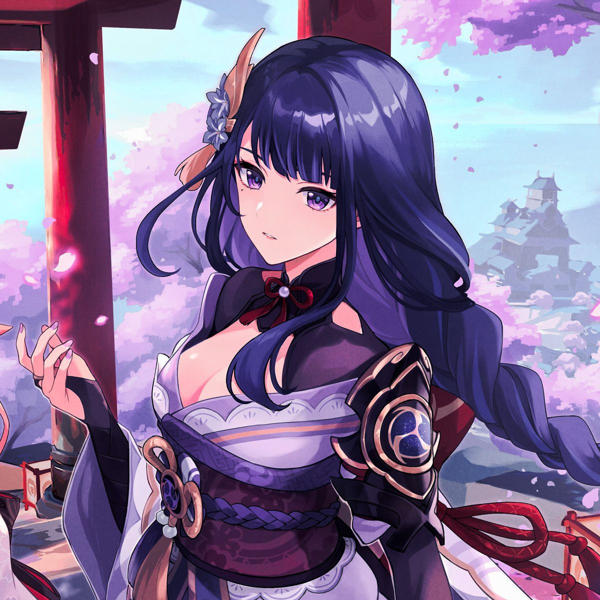

SINOPSIS
Tu familiar y tú han viajado hasta Teyvat desde otro mundo. Separados al llegar y sin forma de salir, te decides a buscar respuestas de los Siete, los dioses de cada elemento. Junto a Paimon, una bondadosa espíritu guía, tu misión te llevará a través de hermosos bosques, ajetreadas ciudades y traicioneras mazmorras.
PERSONAJES DESTACABLES
-
VIAJEROS
-
PAIMON
-
AMBER
-
LISA
-
KAEYA
-
JEAN
ARCONTES
VENTI
ZHONGLI

SHOGUN RAIDEN
NAHIDA
RESEÑA
Genshin Impact es un videojuego de acción y aventura en mundo abierto que ha ganado mucha popularidad en los últimos años. El juego se desarrolla en un mundo fantástico lleno de paisajes hermosos y variados, donde el jugador asume el papel de un viajero o viajera en busca de respuestas sobre su pasado. A medida que se explora el mundo, se encuentran personajes interesantes y diversos, cada uno con su propia historia y personalidad única.
El juego cuenta con un sistema de combate dinámico que se basa en la combinación de habilidades de personajes y elementos, lo que permite al jugador crear una gran variedad de combinaciones estratégicas. Además, el juego cuenta con un sistema de progreso de personajes y armas que fomenta la experimentación y la personalización.
En general, Genshin Impact es un juego impresionante que ofrece una experiencia de juego inmersiva y emocionante para los jugadores que buscan explorar un mundo vasto y detallado mientras luchan contra enemigos desafiantes y descubren historias fascinantes.
PUNTUACIÓN
SEGÚN EPIC GAMES
Puntuación: 9.4/10